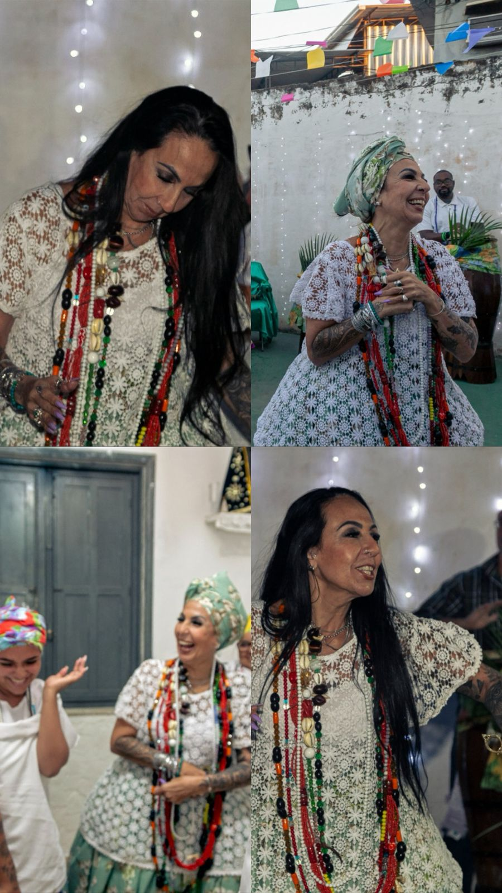
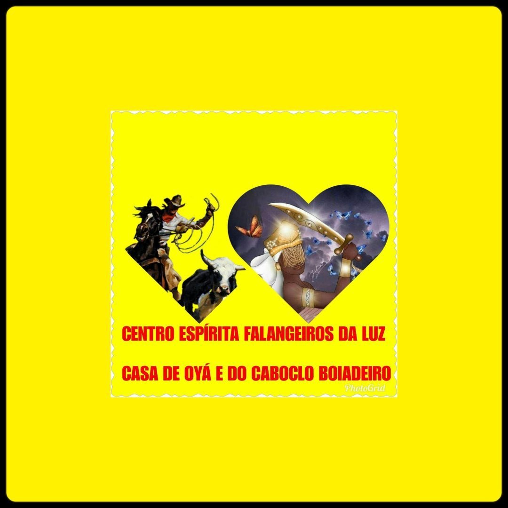
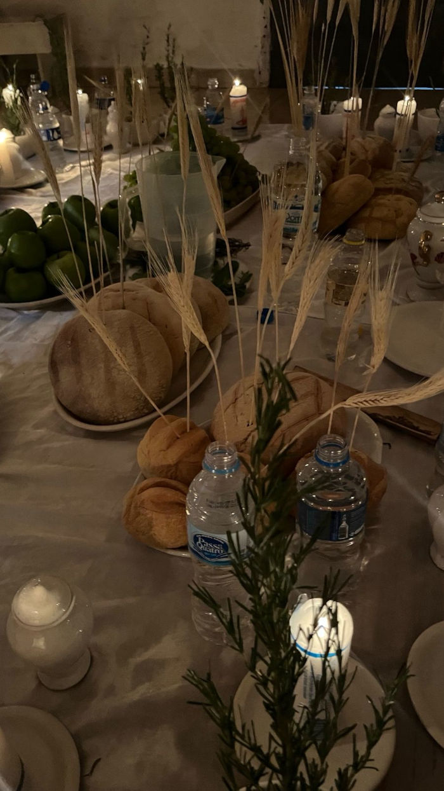
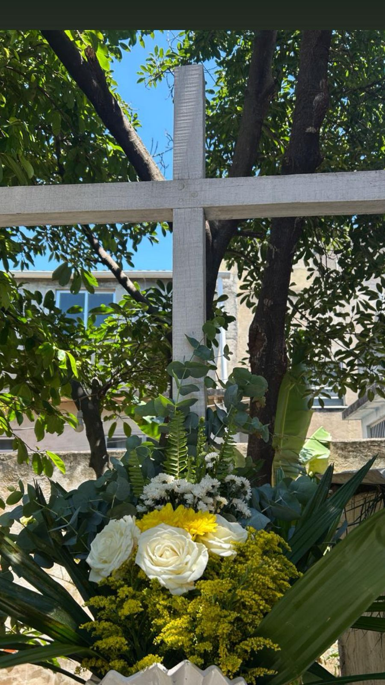
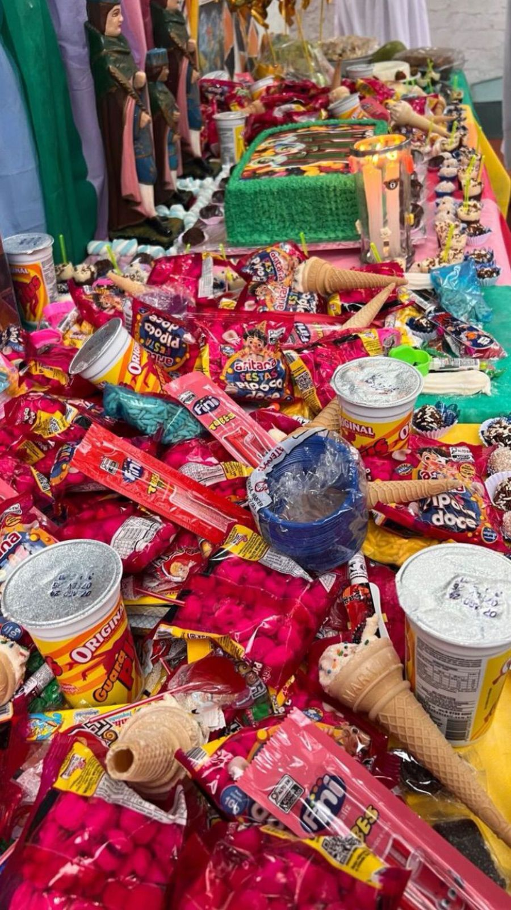
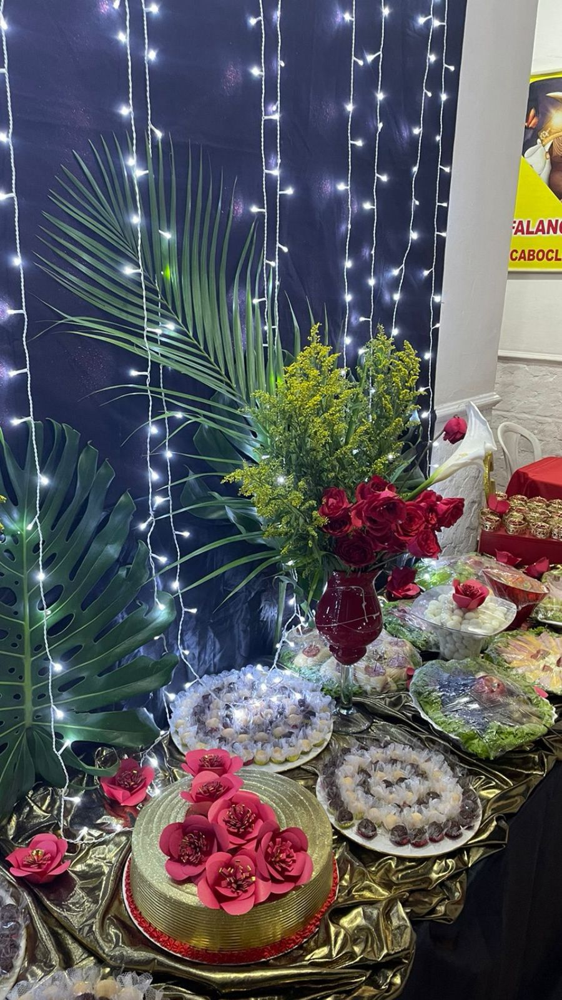

Para Mantermos o respeito e a energia da nossa casa, pedimos atenção ao vestuário. Não é permitido o uso de roupas curtas, decotes acentuados, transparências, calças rasgadas ou entrar sem camisa. Priorize roupas claras e confortáveis.






O CEFL é uma casa de umbanda que fica localizada no bairro de Piedade - RJ. A casa foi fundada no dia 23 de abril de 2011, no bairro do Engenho Novo, pelo caboclo Boiadeiro Zé do Lino, guia- chefe da casa, e dirigida por Cristiana França de Oyá. Desde lá, nossa casa se baseia nos princípios da umbanda que é a caridade, o amor ao próximo e de nossa evolução espiritual e como pessoa. Apesar de seguir os princípios da umbanda, não seguimos a risca a umbanda de Zélio.
Cristiana França, nascida no Rio de Janeiro, formada em Relações Humanas pela Estácio de Sá. Conheceu a religião desde o ventre de sua mãe, sua família carnal é de umbanda, e desde lá sempre frequentou a religião, com os ensinamentos de sua família, principalmente de sua mãe, que era médium de consulta. Desde então, sempre foi apontada dentro da religião com cargo de zeladora, porém, sempre fugiu dessa responsabilidade quando jovem, entretanto, veio assumir essa designação com o falecimento de mãe.
Para Mantermos o respeito e a energia da nossa casa, pedimos atenção ao vestuário. Não é permitido o uso de roupas curtas, decotes acentuados, transparências, calças rasgadas ou entrar sem camisa. Priorize roupas claras e confortáveis.
Pedimos a colaboração de todos para não filmar nossas giras ou médiuns incorporados. Fotos são permitidas apenas das decorações da casa ou quando os médiuns não estiverem em trabalho (desincorporados).
Aceitamos doações de alimentos não perecíveis, materiais de limpeza e materiais utilizados em gira (velas, defumador, cigarro, charuto e bebidas alcoólicas).
OBS: Não aceitamos doações de roupas no momento.
Em nossa casa, oferecemos atendimentos individuais de cartomancia para quem busca clareza e direcionamento. Nossa Zeladora realiza leituras de Baralho Cigano, Tarô e outros oráculos. Se você precisa de uma orientação profunda sobre sua vida ou alguma situação específica, entre em contato conosco para agendar seu horário e obter mais informações.